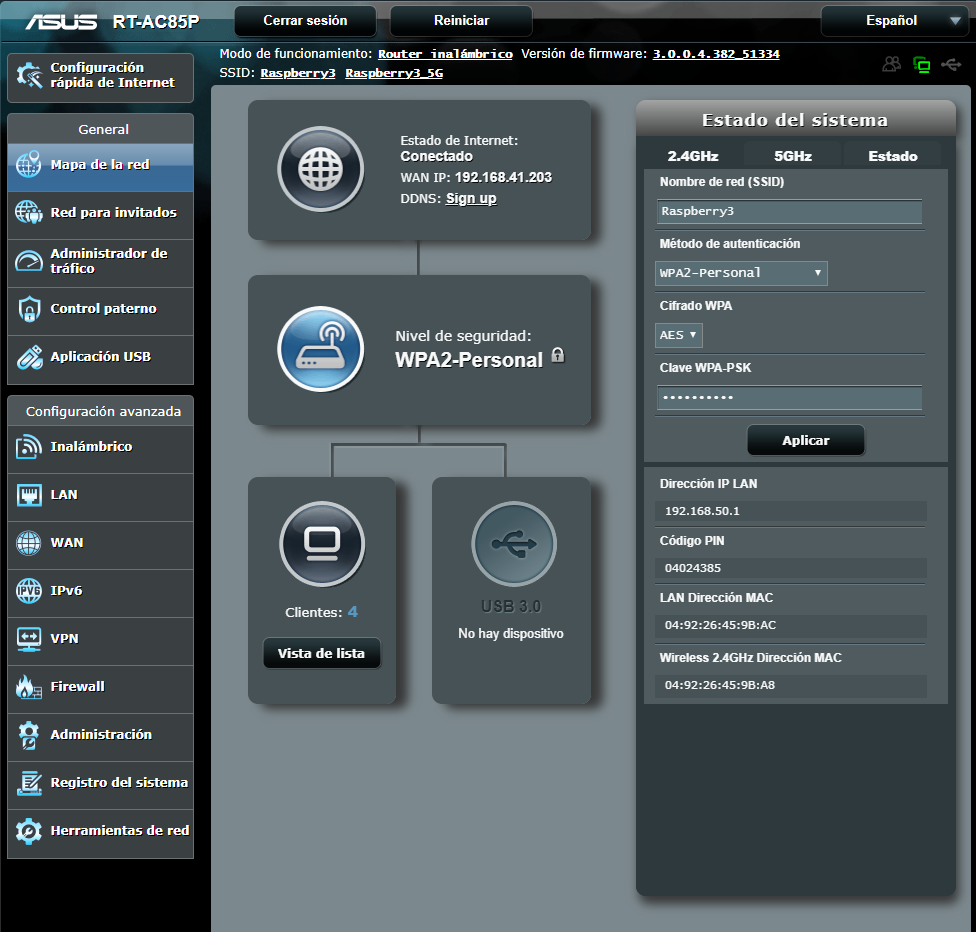
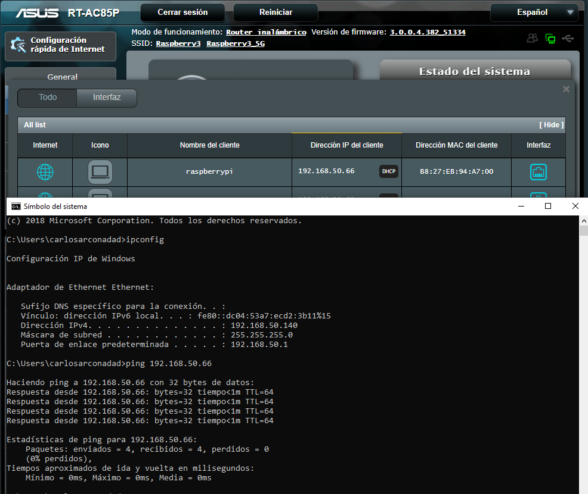

Para el desarrollo de este proyecto hemos precisado de un router, el cual su parte Wan ira conectada a la red del centro (192.168.41.0) y en su parte Lan (192.168.50.0) a la Raspbery pi
El primer reto que nos encontramos es configurar el router con los parametros necesarios para la realizacion de esta actividad:
Una vez que comprobamos que tenemos todo operativo y con conectividad a la red pasaremos a configurar la Raspbery Pi
Para poder poder acceder a ella, tenemos que localizarla en el segmento de la red donde estamos trabajando. Para ello podemos emplear distintos metodos, uno de los mas comodos es acceder al portal de router, el cual nos indica de forma grafica cual es direccion IP
Sabiendo su direccion IP podemos acceder a ella a traves de SSH, para ello abrimos un terminal en el cual tenemos que introducir el siguiente comando ssh pi@192.168.50.60 raspberry donde le estamos indicando que se tiene que conectar a traves de ssh a la (192.168.50.60) cuyo usuario por defecto es pi y contraseña raspberry

Una vez dentro de la raspberry procederemos a cambiar las contraseña por defecto. Los pasos a seguir son los siguientes: